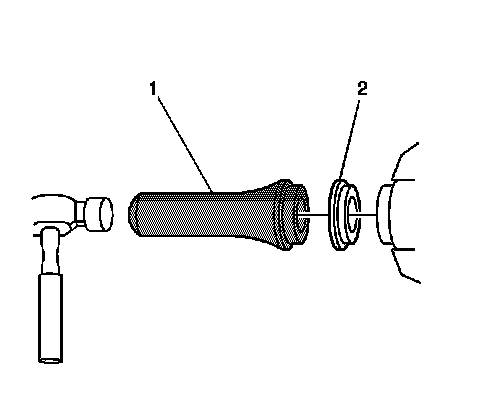

Output Shaft Seal Replacement
Output Shaft Seal Replacement
Tools Required
J 45017 Output Shaft Seal Installer
Removal Procedure
1. Raise and suitably support the vehicle. Refer to Lifting and Jacking the Vehicle (Service and Repair) .
2. Remove the appropriate rear tire and wheel assembly. Refer to Tire and Wheel Removal and Installation (Service and Repair) .
3. Remove the appropriate wheel drive shaft. Refer to Rear Wheel Drive Shaft Replacement (Rear Wheel Drive Shaft Replacement) .
4. Using a flat-bladed tool remove the differential output shaft seal.
Take care not to damage any sealing surfaces.
Installation Procedure
1. Lubricate the wheel drive shaft sealing surface of the oil seal with 75W90 synthetic axle lubricant, GM P/N 12378261 (Canadian P/N 10953455) or equivalent.
2. Install the differential output shaft seal (2) to the J 45017 .

3. Using the J 45017 (1), install the differential output shaft seal (2).
4. Remove J 45017 (1) from the differential output shaft seal (2).
5. Install the wheel drive shaft. Refer to Rear Wheel Drive Shaft Replacement (Rear Wheel Drive Shaft Replacement) .
6. Inspect the fluid level. Refer to Rear Axle Lubricant Level Inspection (Rear Drive Axle) .
7. Install the rear tire and wheel assembly. Refer to Tire and Wheel Removal and Installation (Service and Repair) .
8. Lower the vehicle.